研究摘要
S2 V3.2 怎麼輸：47% 勝率、獲利因子 2.05，這是它的正常形態，不是缺陷。
研究問題
依照標準的 30 分鐘 fail-pattern 報告規範，目前正式運作的 S2-Hammer V3.2，在 fail-pattern、30 分鐘時段、BB／DXY／多時框脈絡幾個角度分別看起來是什麼樣子？
結論與界限
| 判讀 | 結論 | 如何閱讀 |
|---|---|---|
| 成立 | 樣本較小，但勝率與獲利因子都比 V1.9 高 | 勝率 47.13%（比 V1.9 高 6.06 個百分點），獲利因子 2.047（比 V1.9 高 0.512），樣本 157 筆，少於 V1.9 的 224 筆——訊號變少了，但每個訊號的品質變好了。 |
| 限制 | time_bleed 仍是最主要的虧損型態 | 83 筆虧損裡有 48 筆（57.8%）屬於 time_bleed，比 V1.9 的 53.8% 更集中——在 V3.2 的 錘子線進場規則下，虧損仍然是慢慢磨掉，不是立刻打掉停損。 |
| 成立 | 多時框逆勢的懲罰幾乎消失了 | 4 小時偏空逆勢的勝率 46.15%，順勢是 47.62%（差距 1.47 個百分點，接近雜訊）——比 V1.9 的 4.76 個百分點小很多。錘子線進場看起來對 4 小時趨勢狀態的敏感度，比之前的回踩進場低。 |
| 限制 | 樣本數是主要限制 | 總共 157 筆交易，代表大部分子分組（失敗型態、BB 區間、DXY 分桶、多時框狀態）樣本數都很少；V3.2 的樣本外信心本來就有限。這裡的每一張脈絡表都應該當成描述性資訊，不能拿來訂新的硬性規則。 |
核心數據
| 指標 | 數值 |
|---|---|
trades | 157 |
WR | 47.13% |
PF | 2.047 |
time bleed pct | 57.8% |
研究圖表 (18)
圖題、座標與圖內標註保留英文，便於直接對照可重跑的研究輸出；點擊圖片可查看原尺寸。
{kind=link}
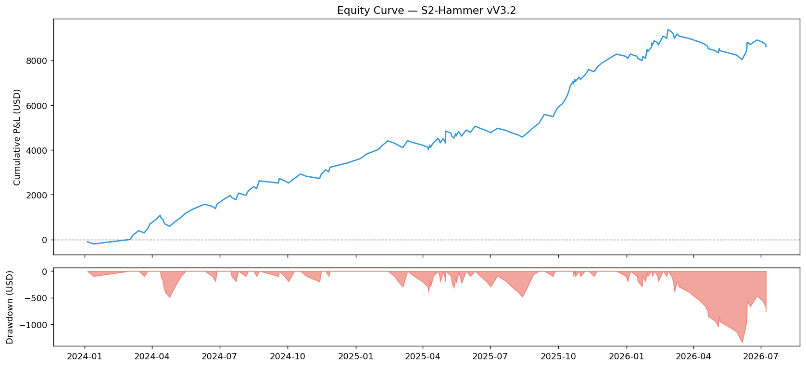
{kind=link}
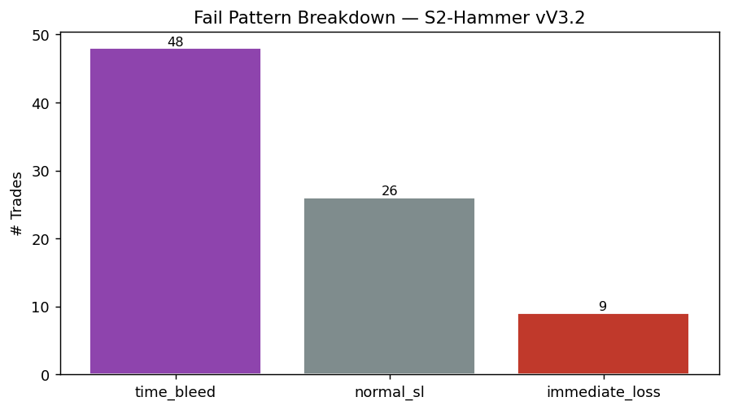
{kind=link}
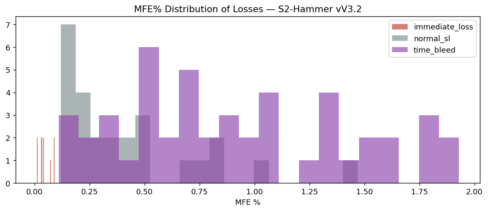
{kind=link}
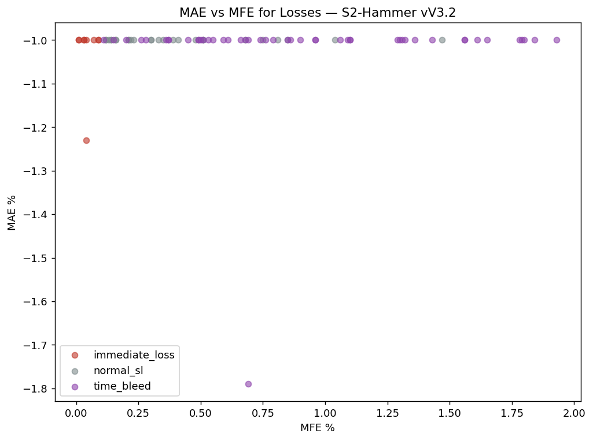
{kind=link}
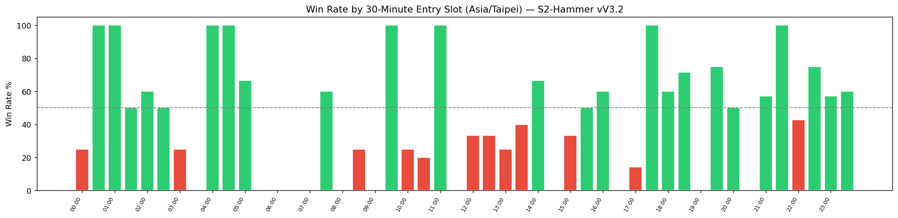
{kind=link}
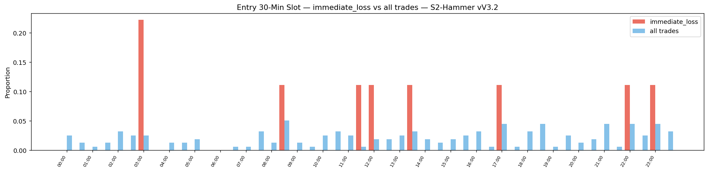
{kind=link}
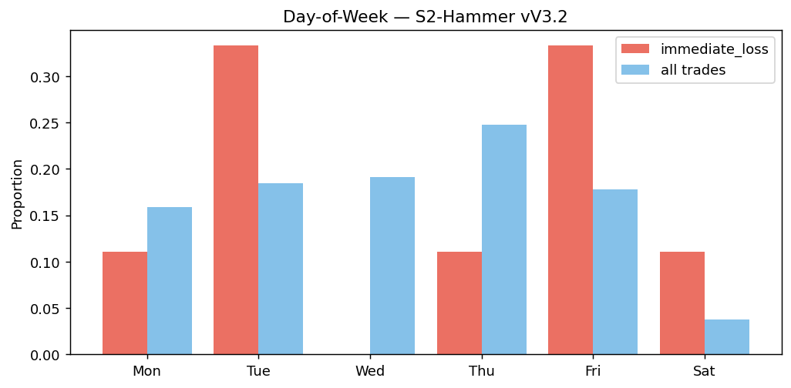
{kind=link}
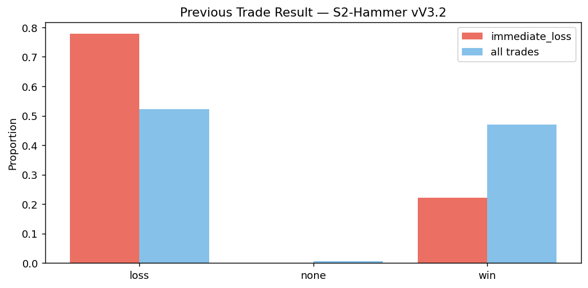
{kind=link}
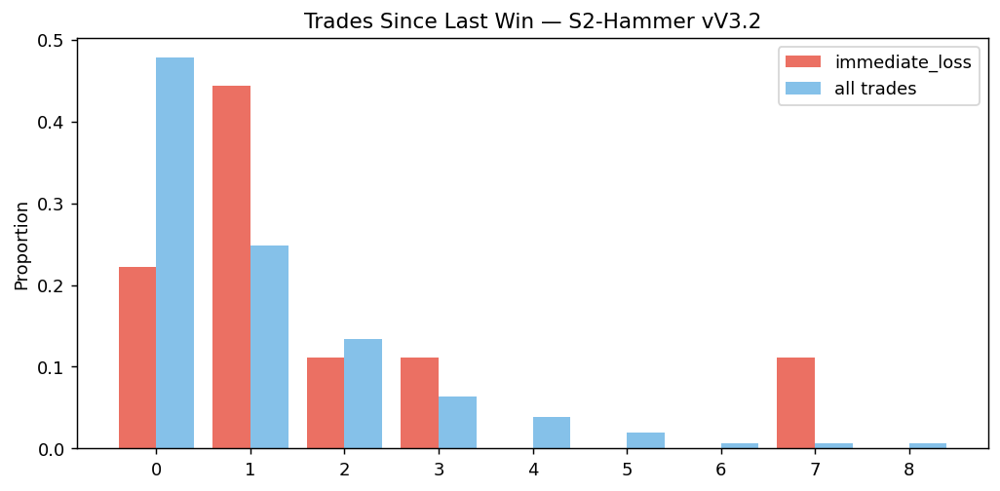
{kind=link}
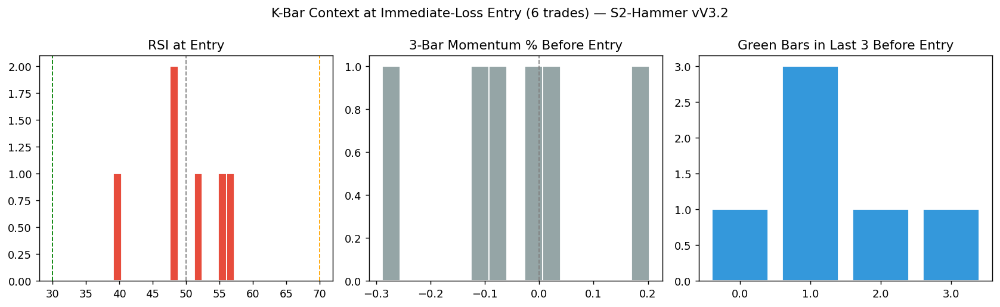
{kind=link}
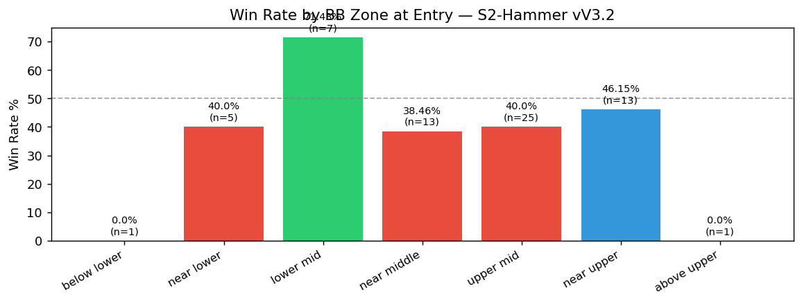
{kind=link}
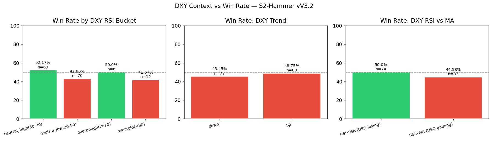
{kind=link}
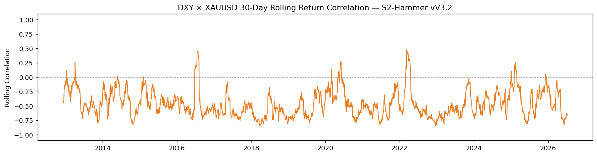
{kind=link}
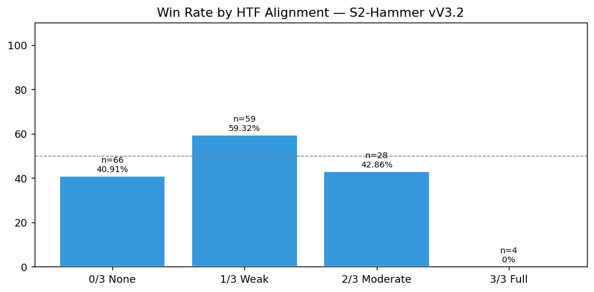
{kind=link}
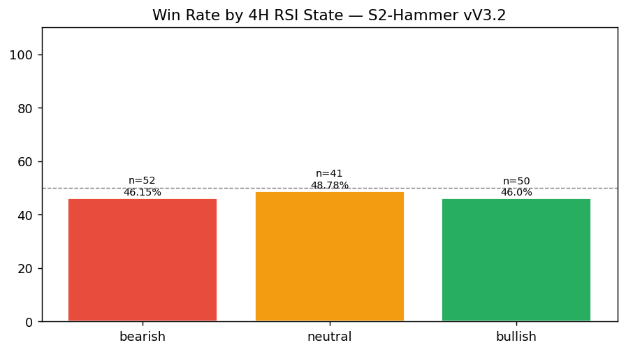
{kind=link}
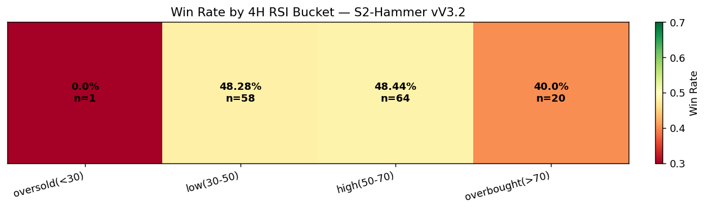
{kind=link}
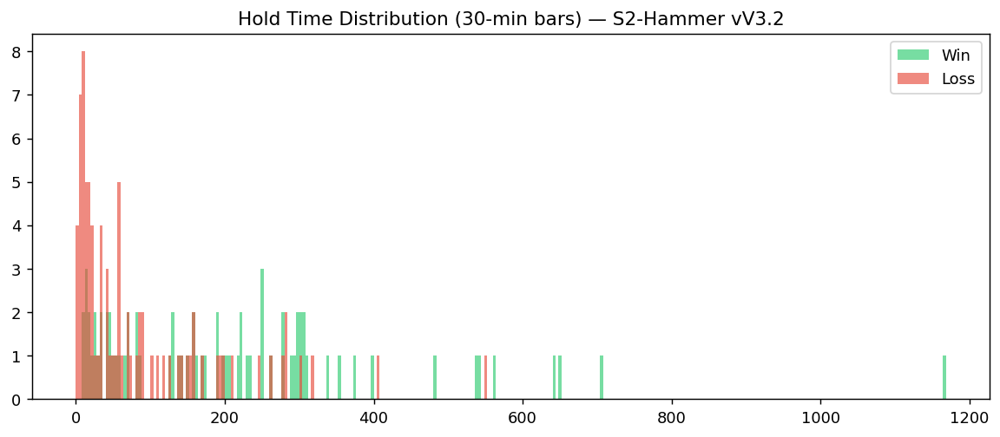
{kind=link}
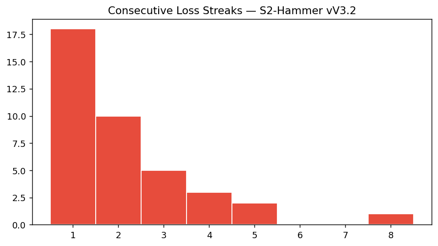
研究識別
| 研究編號 | RS-XAUUSD-20260727-007 |
| 市場 | XAUUSD |
| 主題 | 策略診斷 |
| 狀態 | 已確認 |
| 日期 | 2026-07-27 |
實務與證據邊界
這篇研究不直接修改正式策略、即時風控或進場規則。
Public 只保留已審閱的彙總結果與可重跑方法；原始資料、私人紀錄與決策對話不在這裡。